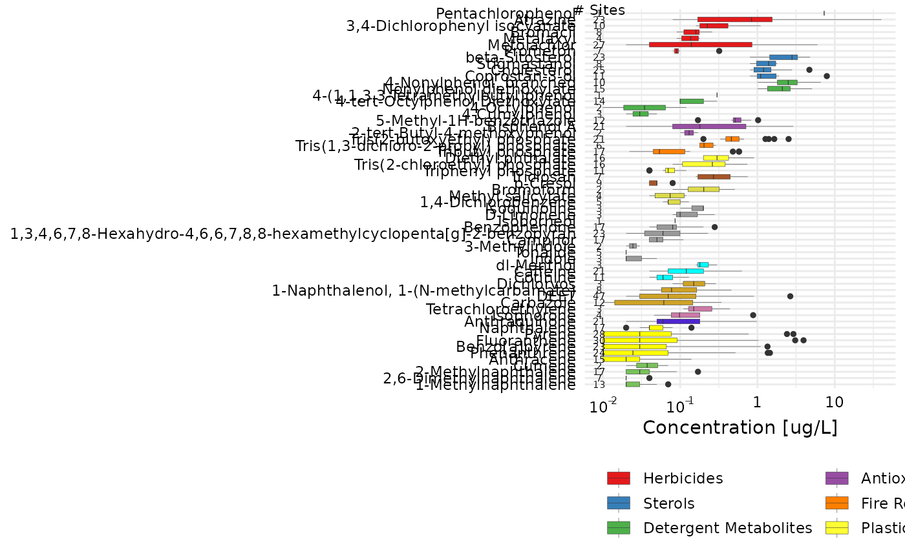

Use this function to create a chemical_summary, but instead
of using any benchmarks, the EAR column is simply
the concentration. The output of this function can be used
in any of the plotting or table functions in the same way
that the output of get_chemical_summary.
get_concentration_summary( tox_list, chem_data = NULL, chem_site = NULL, chem_info = NULL, tox_names = TRUE )
| tox_list | List with data frames for chem_data, chem_info, and chem_site.
Created with |
|---|---|
| chem_data | Optional data frame with (at least) columns: CAS, SiteID, and Value. Default is |
| chem_site | Optional data frame with (at least) columns: SiteID, and Short Name. Default is |
| chem_info | Optional data frame with (at least) columns: CAS, and class. Default is |
| tox_names | Logical whether to use the provided chemical names from the ToxCast or not. If there is not a match by CAS, the function will look for a column "Chemical" in the "Chemical" tab. If that column doesn't exist, it will create a (not good!) name. |
a data frame with the columns: CAS, chnm (chemical name as a factor), site, date, EAR (which is just concentration), Bio_category, shortName (of site), Class. The output of this function is where you find EAR values for every chemical/endpoint combination.
path_to_tox <- system.file("extdata", package="toxEval") file_name <- "OWC_data_fromSup.xlsx" full_path <- file.path(path_to_tox, file_name) tox_list <- create_toxEval(full_path) chemical_summary_conc <- get_concentration_summary(tox_list) head(chemical_summary_conc)#> # A tibble: 6 x 9 #> CAS site EAR date Bio_category endPoint shortName Class #> <chr> <chr> <dbl> <dttm> <chr> <chr> <chr> <fct> #> 1 2114… USGS… 0 2012-07-12 11:00:00 Concentrati… Concent… Oswego Flav… #> 2 5783… USGS… 0 2011-03-15 10:35:00 Concentrati… Concent… StLouis Herb… #> 3 5783… USGS… 0.11 2011-05-01 13:00:00 Concentrati… Concent… StLouis Herb… #> 4 5783… USGS… 0.09 2011-06-28 14:15:00 Concentrati… Concent… Maumee Herb… #> 5 5783… USGS… 0.17 2012-05-07 09:23:00 Concentrati… Concent… Maumee Herb… #> 6 5783… USGS… 0.12 2012-05-22 15:30:00 Concentrati… Concent… Maumee Herb… #> # … with 1 more variable: chnm <fct>